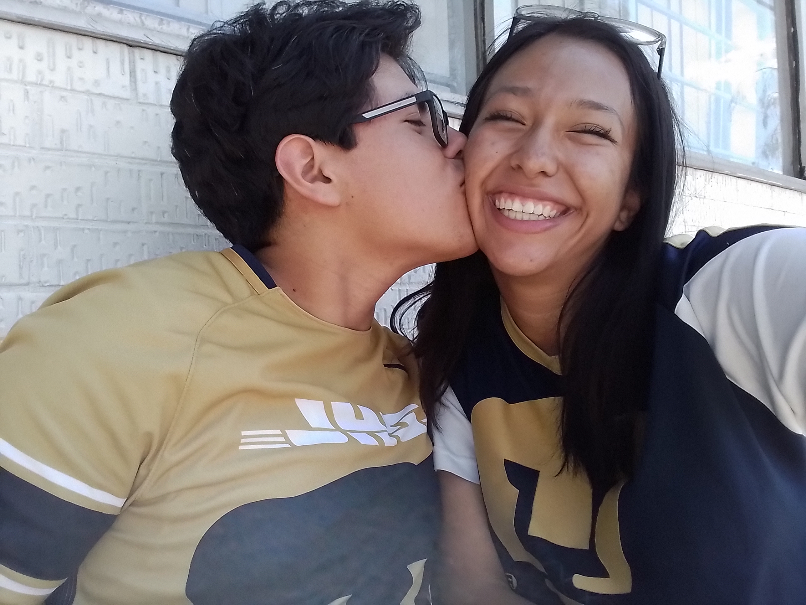
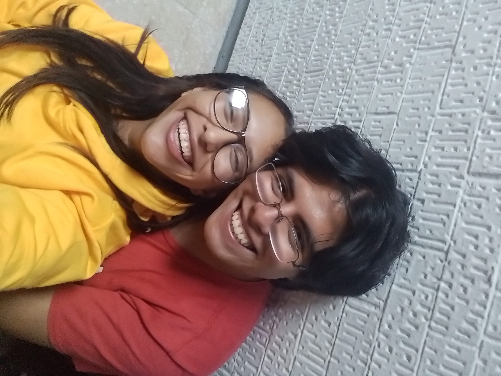
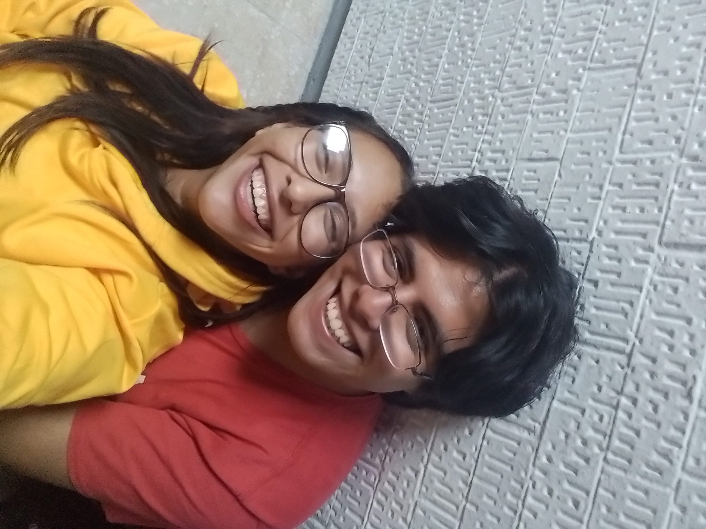
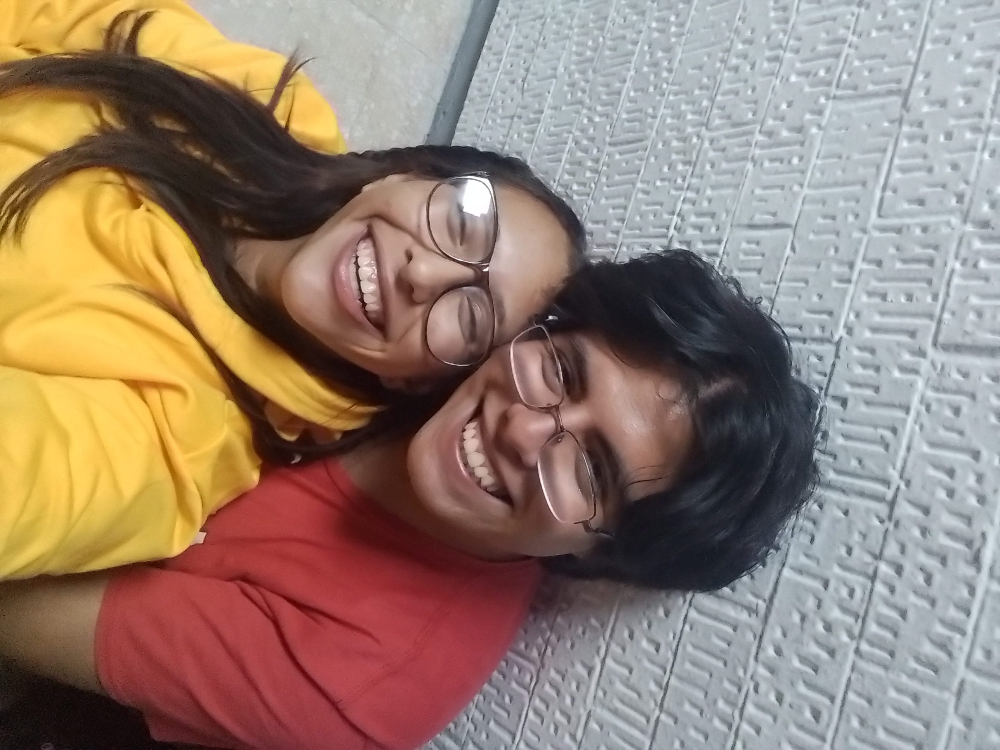

Mi querido Alecito, es algo tarde el día que estoy haciendo esto pero he querido hacerlo hace tiempo porque mereces algo especial algo que nunca hayas tenido asi que quiero que tengas un pedacito de lo que me apaciona para ti, codifique pensando en ti asi que aquí en esta página web mi pequeño rayo de sol te voy a poner 20 momentos en los que he sido muy feliz a tu lado. Cada uno de esos momentos es un tesoro para mí, y quiero recordarlos y celebrarlos. Pero, más allá de esos momentos, quiero que tengas siempre presente que siempre serás amado incondicionalmente. Tu presencia en mi vida es un regalo y una fuente constante de alegría, te amo con mi alma

 

